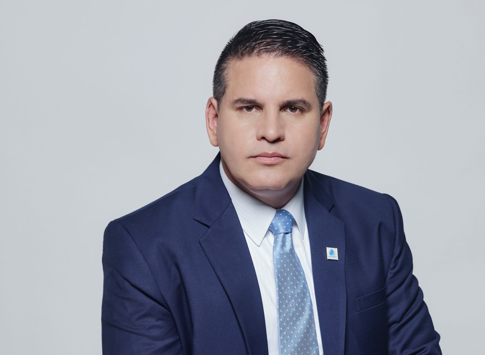

Fabricio Alvarado Muñoz
El era un periodista de Repretel y actualmente es un politico costarricense siendo diputado de la Asamblea Legislativa de Costa rica por el partido Restauración Nacional. Nació el 30 de mayo de 1974 en San José, Costa Rica postula a candidato en la presidencia perteneciendo al Partido Nueva República. El es un politico sumamente criticado debido a sus creencias y posturas políticas.